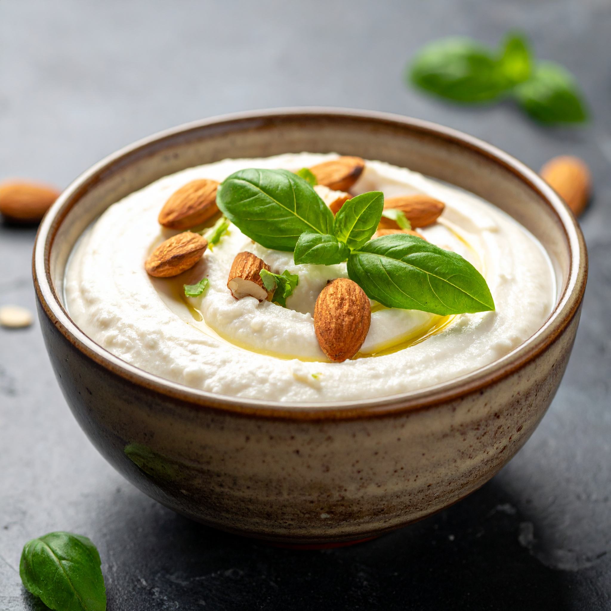

Vegan Ricotta

A delicious homemade plant based ricota. This hybrid almond and tofu gives a decent kick of protein, and has enough fat to hold it all together. It's truly amazing.
Ingredients
- 1cup blanched slivered almonds (soaked at least 4 hours)
- 1/4cup unsweetened protein almond milk
- 1TBS lemon juice
- 1TBS apple cider vinegar
- 2TBS extra-virgin olive oil
- 7ounces extra-firm tofu (thoroughly presed)
- 1/4tsp salt
Directions
Ahead of time
- Soak nuts: Make sure your blanched almonds or raw cashews have been thoroughly soaked or your ricotta will be gritty. Soak them at room temperature for at least 4 hours — overnight is even better. If you forget, boil them for about 10 minutes and then turn off the heat and let them soak in the hot water for about 1 hour.
- Press the tofu: It's also recommended to press your tofu ahead of time. You can use a tofu press, or wrap the block in a lint-free kitchen towel and gently weigh it down with a cutting board or heavy plate. Let it press for about 15 minutes.
Make the Vegan Ricotta
- Combine nuts and wet ingredients: Drain the almonds/cashews and add them to a food processor along with 1/4 cup unsweetened plain plant milk, lemon juice, apple cider vinegar, and extra-virgin olive oil.
- Blend until smooth: Process till the mixture is as smooth as possible, scraping down the sides to ensure everything is evenly blended. It can take several minutes to get it smooth enough. Almonds will take a bit longer than cashews and will retain a little more grittiness.
- Blend in the tofu: Add in the tofu and salt and process until smooth and fluffy. Again, scrape down the sides of the food processor as needed to make sure everything is incorporated.
- Season to taste: Taste and adjust to preference. Add more salt or lemon juice if you like.
- Stir in add-ins: Once you're happy with the base flavor of the ricotta, you can add in garlic powder, fresh chopped basil, or Italian seasoning. I always recommend this if you're planning to use this vegan ricotta in lasagna or stuffed shells!
This recipe is originally from Sarah's Vegan Kitchen
Go Home